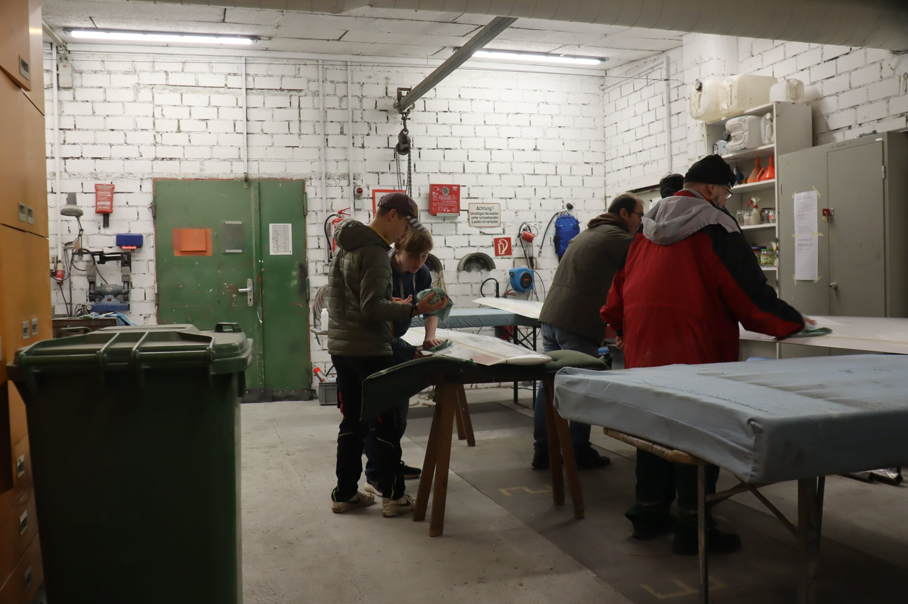

Werkstatt


Mitanpacken
Auch im Winter ist bei uns einiges los! Wenn die Flugsaison vorbei ist, kümmern sich unsere Vereinsmitglieder gemeinsam um die Wartung und Pflege der Flugzeuge und Fahrzeuge. Dabei wird geschraubt, geprüft und angepackt, damit zum Saisonstart wieder alles bereit für neue Flugabenteuer ist. Dass unser ältestes Flugzeug bereits rund 60 Jahre alt ist und dank sorgfältiger Wartung weiterhin alle strengen Sicherheitsanforderungen der Luftfahrt erfüllt, zeigt, wie viel Leidenschaft und Wissen in unserer Arbeit steckt.
Bei den gemeinsamen Arbeitseinsätzen ist jeder willkommen und kann sich einbringen. Neben der Arbeit steht vor allem das Miteinander im Mittelpunkt. Gemeinsam etwas schaffen, neue Leute kennenlernen und Teil einer starken Gemeinschaft sein – das macht unsere Winterarbeit aus. Bei guter Stimmung in der Werkstatt vergeht die Zeit wie im Flug.
Auch technisch gibt es jede Menge zu entdecken: Erfahrene Vereinsmitglieder geben ihr Wissen weiter, erklären Zusammenhänge und stehen bei Fragen mit Rat und Tat zur Seite. So entstehen spannende Einblicke in die Technik unserer Flugzeuge und es gibt viel Neues zu lernen. Schritt für Schritt wächst dabei nicht nur das technische Verständnis, sondern auch die Verbindung zu unseren Maschinen und zum Verein.
Denn Fliegen bedeutet bei uns mehr als nur in der Luft unterwegs zu sein. Es bedeutet auch, gemeinsam etwas auf die Beine zu stellen und Teil einer Gemeinschaft zu sein, die ihre Begeisterung für die Luftfahrt teilt.
| Technischer Leiter | Roland Pschorn |
|---|---|
| Kontakt | info@luftsportverein-regensburg.de |